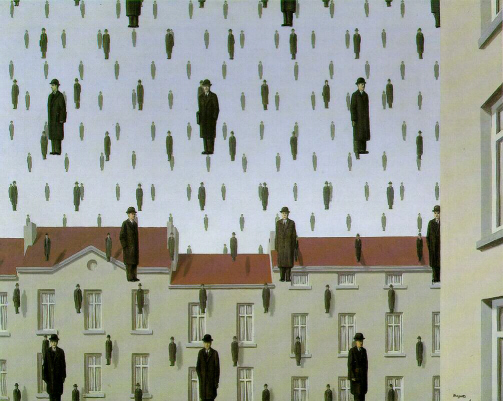

Qui Magritte moltiplica a stampo il suo famoso personaggio in un paesaggio di case e di tetti tipicamente belga. L'omino con vestito scuro e cappello nero plana sulla terra come il lento fioccare della neve o, al contrario, vola oltre i tetti ed i muri di case e palazzi. Non c'è dubbio alcuno sulla magia e dolcezza poetica di questa immagine, nè si può negare lo straordinario contesto, ma questo quadro ci dà la possibilità di analizzare in dettaglio alcuni particolari. Gli uomini proiettano la loro ombra sulle case, e questo potrebbe sembrare abbatsanza normale, ma ciò che è straordinario è che proiettano la loro ombra pure nel cielo, che diventa una specie di fondale privio di profondità.
Magritte insinua però un altro dubbio a chi guardi il quadro: le ombre in profondità hanno una lieve sfumatura rosa sul volto. Sono ombre che mantengono le caratteristiche del corpo che le proietta? O sono forse altri omini che planano in lontananza? In questo caso, a dire il vero, le proporzioni prospettiche non combacierebbero con lo stemperarsi dei neri, ma forse proprio questa è la soluzione.
In tutti i modi proprio in questa ambiguità sta la grandezza di Magritte, che sa stupirsi prima di cercare di stupire noi.